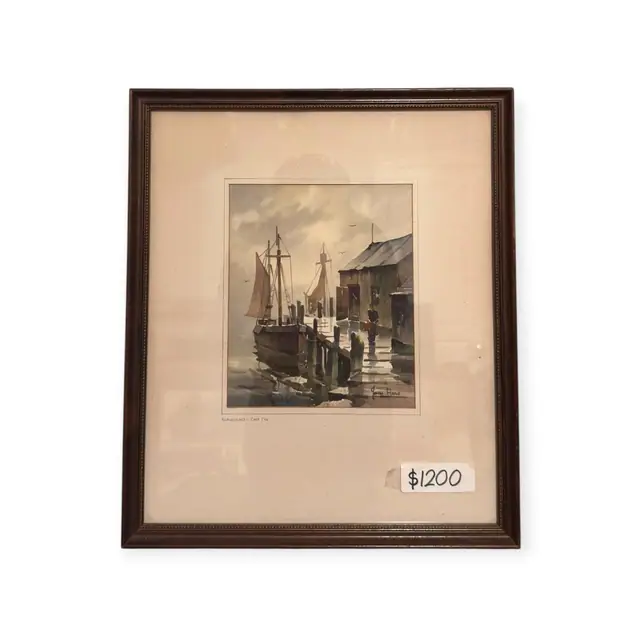
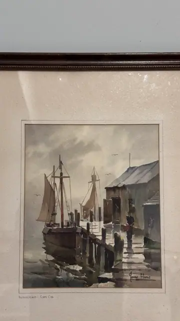
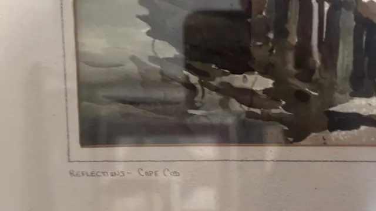
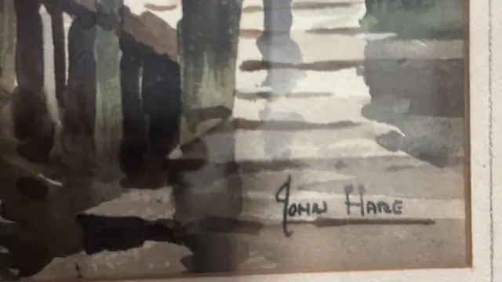

Paintings & Prints
Reflections Cape Cod Harbour Watercolour by John Hare, Signed, Framed
John Hare · mid to late 20th century
Price Upon Request




About the Item
JOHN HARE. A moody harbour watercolour: a dark-hulled fishing boat with two raised tan sails lies alongside a pier, a second smaller sail behind it, and a grey shingled dock shed fills the right of the composition. A lone figure in dark clothing stands on the wet planking carrying a red bucket, the one warm note in an otherwise cool scheme of slate grey, olive, ochre and blue-black. Broad wet washes are laid in for the stormy sky and the water, with the reflections of the pilings dragged downward in loose vertical strokes and small gulls flicked into the sky. The sheet is mounted on a cream mount with a ruled ink border, titled in pencil below the image, and set in a narrow moulded dark wood frame under glass. Medium: watercolour on paper. Signed lower right within the image, in dark ink or paint, reading "JOHN HARE". Inscribed on the reverse or mount: REFLECTIONS - CAPE COD (pencil, on the mount below the image); $1200 (handwritten price sticker on the mount at lower right). Condition: Paper and washes look clean and unfaded; the mount is lightly toned. Heavy reflections on the glass. A price sticker is stuck to the mount.
About the Artist
John Cuthbert Hare (1908-1978) was an American painter born in Brooklyn who trained at Pratt Institute, the Art Students League and the Grand Central School of Art. Long associated with Cape Cod, where he settled in Yarmouth Port, he was known as the Dean of Cape Cod artists for his oils and watercolours of New England coastal scenes.
Details
- Creator:
- John Hare
- Creation Year:
- mid to late 20th century
- Dimensions:
- Height: 16.5 in (41.91 cm)
Width: 14.0 in (35.56 cm)
outside of frame - Medium:
- watercolour on paper
- Period:
- 20Th
- Condition:
- Offered in the condition shown in the photographs.
- Reference Number:
- VO-146
- Documentation:
- no certificate photographed
- Gallery Location:
- REFLECTIONS - CAPE COD (pencil, on the mount below the image); $1200 (handwritten price sticker on the mount at lower right)